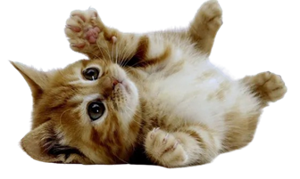

CatPhotoApp
Versión modificada en español del primer ejercicio de la certificación sobre Responsive Web Design de freeCodeCamp.
Clica sobre la foto para ver más fotos de gatitos.

Síes y Noes de los Gatitos |
||
|---|---|---|
Cosas que los gatos aman: |
||
|
|
<figure>
<img src="./img/garfield1.gif" width="100px" alt="Garfield contento">
<figcaption>Los gatos aman sus juguetes.</figcaption>
</figure>
|
|
|
|